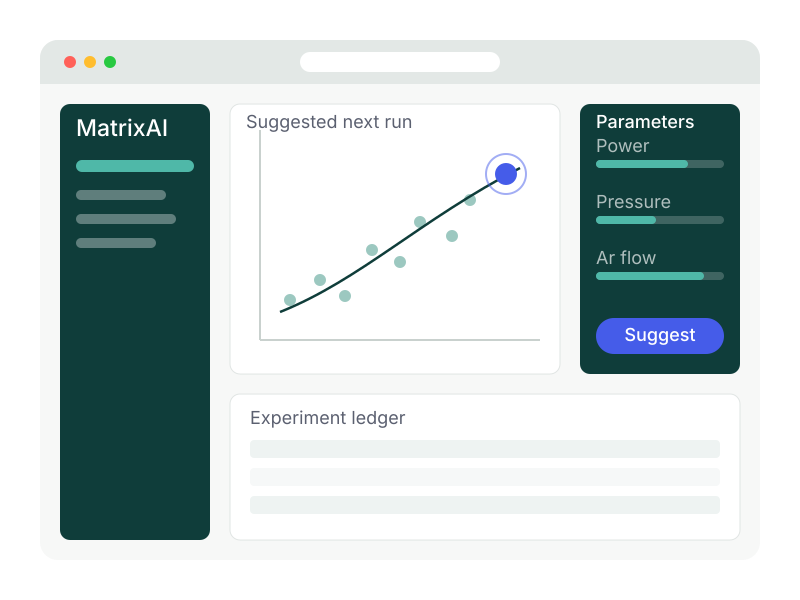
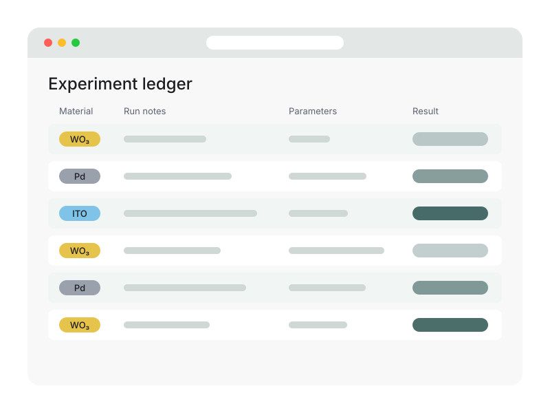
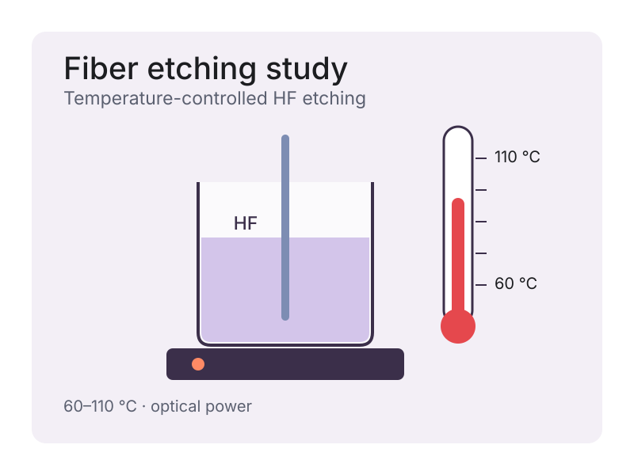

02 — Machine Learning / Web App
MatrixAI

Overview
ML-guided web app that suggests thin-film sputtering parameters from experiment history, with an experiment ledger, literature PDF parsing, and multi-material tracks (WO₃, Pd, ITO). I built it to shorten the trial-and-error loop of my own deposition runs.
What I did
- 01Suggests sputtering parameters learned from past runs
- 02Experiment ledger that keeps every deposition and its result
- 03Parses literature PDFs into comparable process data
- 04Separate tracks for WO₃, Pd and ITO

Tools & methods
- Python
- FastAPI
- scikit-learn
- Supabase
- Render
